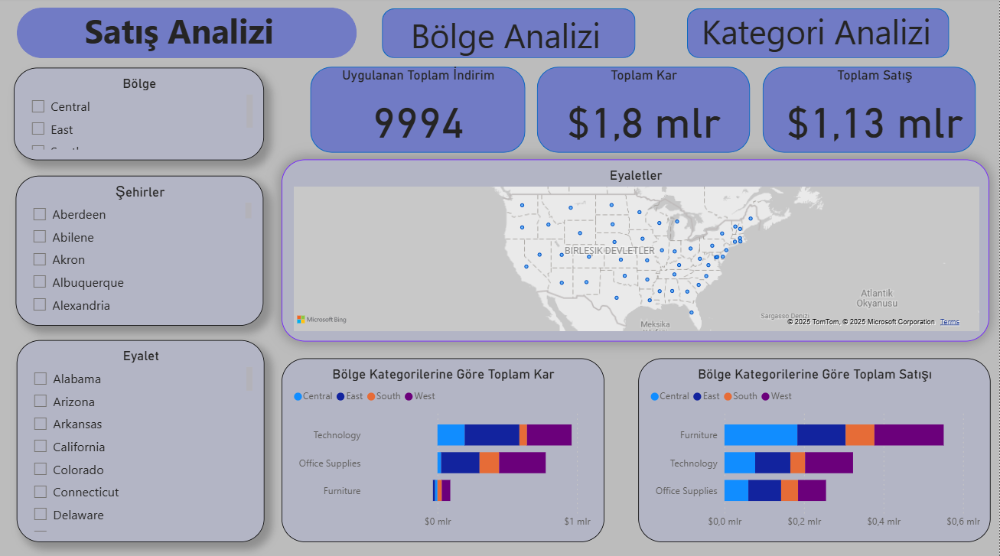
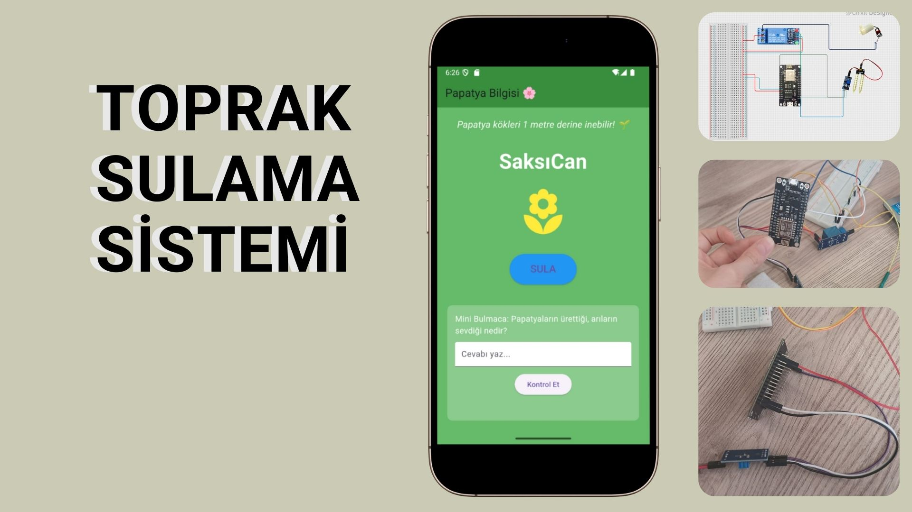
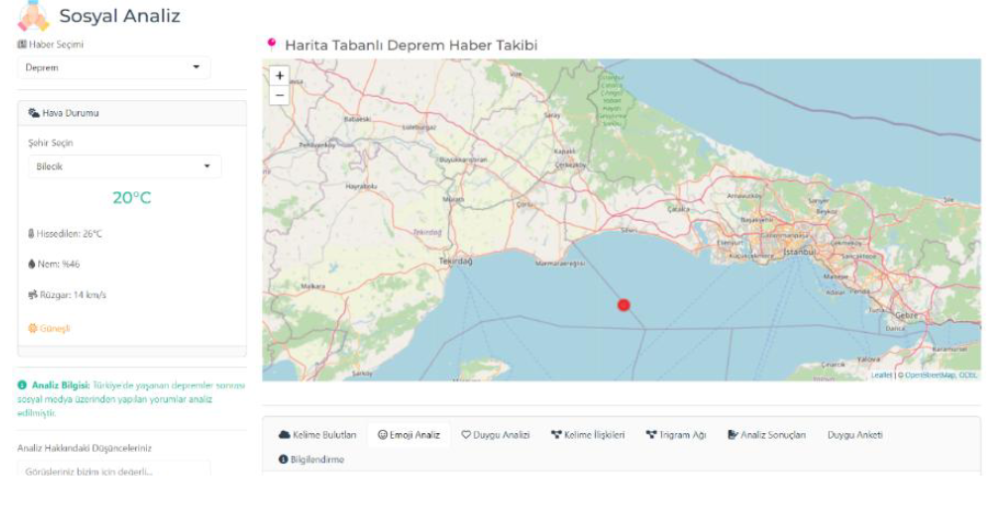
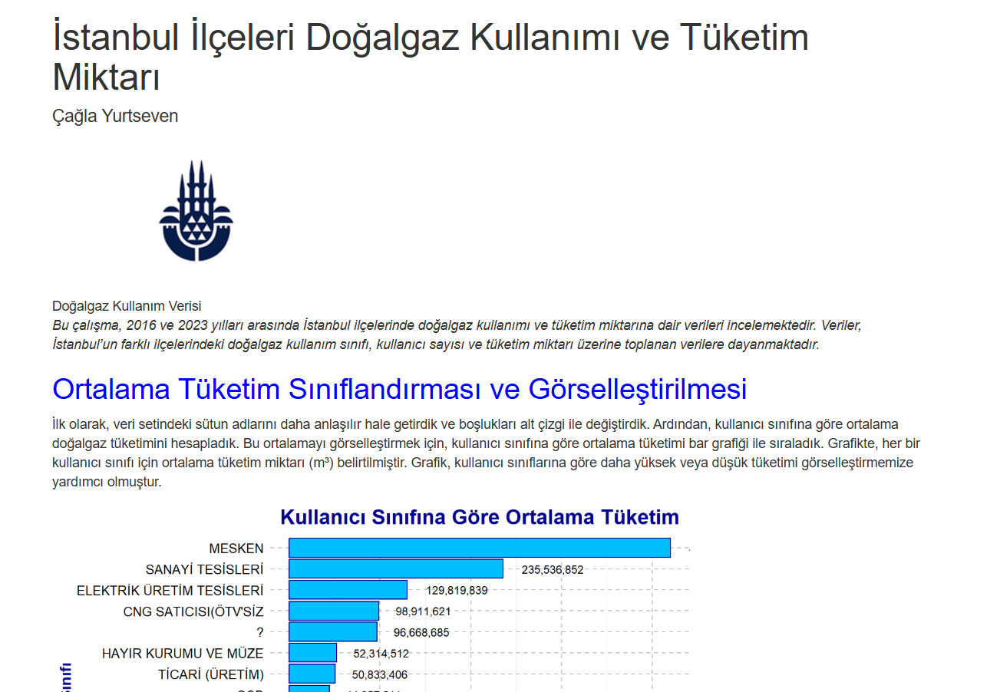

👋 Merhaba! Ben Çağla Yurtseven. Eğitim sürecimde akademik projeler geliştirdim. Python, R, SQL ve Power BI gibi araçlara hakimim ve bu teknolojileri kullanarak çeşitli analiz ve görselleştirme projeleriyle kendimi geliştirdim. Bankacılık sektöründe edindiğim staj deneyimi sayesinde kurumsal iş süreçlerine dair önemli içgörüler kazandım. Problem çözme yeteneğim ve takım çalışmasına yatkınlığım ile dijital dünyada katma değer üretmeyi hedefliyorum.
Akademik geçmişim, profesyonel deneyimlerim ve sosyal katkılarım
Yönetim Bilişim Sistemleri mezunu olarak veri analizi, raporlama ve dijital süreç yönetimi alanlarında kendimi geliştirmekteyim. Eğitim hayatım boyunca farklı projelerde veri düzenleme, analiz ve görselleştirme süreçlerinde aktif çalışmalar yürüttüm. Analitik düşünme becerim, öğrenmeye açık yapım ve çözüm odaklı yaklaşımım sayesinde süreçlerin daha verimli ilerlemesine katkı sağlamayı hedefliyorum. Teknik yetkinliklerimi organizasyon, iletişim ve ekip çalışması becerilerimle birleştirerek farklı alanlarda katma değer üretebilecek projeler geliştirmeye odaklanıyorum.
Yönetim Bilişim Sistemleri - Lisans
GPA: 3.61/4.0 - Fakülte Üçüncüsü
Uygulamalı Microsoft Power BI
BTK Akademi, 2025
Uygulamalarla SQL Öğreniyorum
BTK Akademi, 2024
Sıfırdan İleri Seviye Python Programlama
BTK Akademi, 2023
İleri Excel Geliştirme ve Uyum Eğitimi
Bursa Nilüfer Halk Eğitimi Merkezi, 2023
Python
R Programlama
Excel
Microsoft Office
SQL
Power BI
Locomar
İş Geliştirme Asistanı | 2024 Ekim - Aralık
Locomarda İş Geliştirme Asistanı olarak LinkedIn üzerinden marka tanıtımı yaptım, kurumsal yazışmalar gerçekleştirdim ve haftalık görevleri zamanında tamamladım. Bu deneyim, iletişim ve organizasyon becerilerimi geliştirmeme katkı sağladı.
DenizBank A.Ş
Şube Stajyeri | 2024 Ağustos - Eylül
Kurum kültürü ve bankacılık işleyişi hakkında gözlem ve deneyim hakkında bilgiler edindim. Günlük mutabakat işlemlerinde destek sağlandı, fatura ve evrak kontrolleri gerçekleştirdim.
Bilecik İl Milli Eğitim Müdürlüğü
Atölye Rehberi | 2024 Eylül
"Türkiye Yüzyılı Işığında Bilecik Bilim Şenliği" kapsamında, Sanal Gerçeklik (VR) standında gönüllü olarak görev aldım. Öğrencilere sanal gerçekliğin ne olduğunu, kullanım alanlarını anlattım ve interaktif VR deneyimi sundum.
Bilecik Şeyh Edebali Üniversitesi Endüstri 4.0 ve Siber Güvenlik Kulübü
Sayman | 2023-2024
Bu proje, Kaggle üzerinden alınan Sample Superstore veri seti kullanılarak hazırlanmış interaktif bir Power BI satış analizi raporudur.


Bu projenin temel amacı; çocuklara bitki bakımı ve su tüketimi konusunda erken yaşta bilinç kazandırmak, doğa ile bağ kurmalarını sağlamak ve sorumluluk alma becerilerini geliştirmektir.

Youtube yorumlarını analiz ederek toplumda yaşanılan olaylara tepkilerini gerekli analizlerle ortaya çıkarmaktır.
İstanbul ilçeleri bazında doğalgaz kullanım eğilimlerini R ve ggplot ile analiz edilmesi.

c.yurtsrven@gmail.com